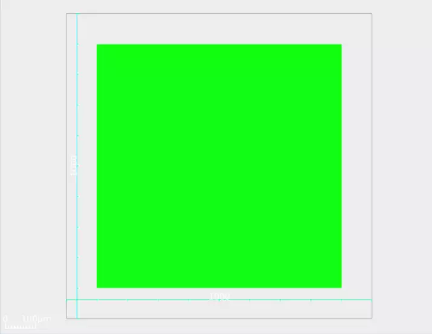
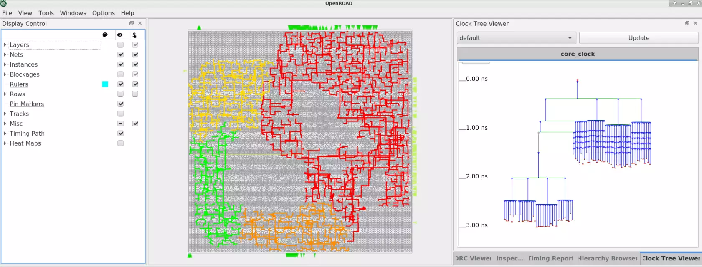
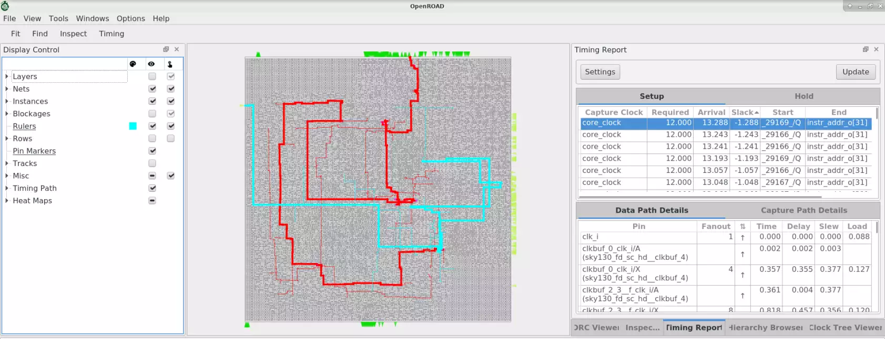

逻辑门决定“算什么”
与门要求两个输入都为 1；或门要求至少一个输入为 1；非门把 0、1 取反。它们都对应占据实际面积、有输入输出引脚的电路。
→
AND
→从逻辑门到布局、时钟和金属连线。
每节聚焦一个问题，边读图，边动手。
按顺序读主线，也可以直接进入图鉴和实验。



10 节签核课程 · 3 个真实案例 · 12 项验收核对
搭配两门板级课程，先认清对象，再看几何空间、功率回路与反馈路径。
数字电路用高、低电压区间表示 1 和 0。高电平的具体电压由工艺与电路决定，1 不等于固定的 1 伏。
与门要求两个输入都为 1；或门要求至少一个输入为 1；非门把 0、1 取反。它们都对应占据实际面积、有输入输出引脚的电路。
寄存器 A → 逻辑门 → 寄存器 BA 放在左边，逻辑门在中间，B 在右边A 的输出引脚 → 金属线 → 逻辑门引脚寄存器保存数据；逻辑门处理数据；时钟决定寄存器什么时候更新。后续章节会用“寄存器到寄存器”的一条路径解释时序。
标准单元是预先设计好的门、触发器等小电路；宏单元是 SRAM 等较大的完整模块；网络（Net）是一组应该电气连通的引脚。
仅有逻辑关系还不够。工具还需要知道元件尺寸、制造规则、电气特性和性能目标。
这是便于入门的流程骨架。电源规划、优化、提取与检查会穿插执行；实际流程会迭代，顺序随设计和工具配置变化。
Die 是芯片边界，Core 是主要单元的放置区域。宏单元、引脚和电源结构也需要在这一步协调。
此算例不含宏单元；蓝色单元保持尺寸，调整的是核心区大小。图中不计算真实布线拥塞。
单元利用率 = 单元面积 ÷ 放置区域面积。 它衡量放了多少单元。布线资源使用率 = 使用量 ÷ 容量。 它衡量连线有多挤。平均利用率较低，局部仍然可能拥塞。
宏单元的引脚集中、体积较大，附近容易形成瓶颈。Halo 是宏周围的放置预留间隔，有助于引脚连接；金属能否从其上方经过，还要看对应层的障碍规则。
全局布局优化整体分布；合法化与详细布局把单元移到允许的位置、消除重叠，并进行局部改善。
演示使用两引脚连接的曼哈顿距离：|Δx| + |Δy|，并检测矩形重叠。连线是连接关系的可视化，尚未经过真实布线。三种布局是预设教学状态，拖动后的位置也不会自动合法化。
工具还要考虑关键路径、引脚可达性、局部密度与拥塞。有时适当分散单元，能让后面的实际布线更顺利。
全局布局移动的是单元；全局布线规划的是连线路径。位置确定以后，连线的实际长度仍会受到障碍、布线层和制造规则影响。
时钟树综合（CTS）安排分支和缓冲器，控制到达时间、转换速度与负载，协调不同接收端的时钟关系。
教学模型：每单位路径长度延迟 0.01 ns，每个演示缓冲器固定延迟 0.15 ns；忽略负载、转换速度、工艺变化与真实线网 RC。对称画法不代表真实 CTS 总能做到零偏斜。
全局布线划定引导区域、评估资源；详细布线连接真实引脚，安排具体线段、轨道和层间通孔。
示意中 M1、M2 的颜色仅用于区分层；拥塞视图的颜色才表示资源压力。两根线在俯视图交叉，需要检查层和通孔才能判断是否连接。
网格容量充足，也可能因局部引脚难接、通孔放不下或间距限制而失败。需要重新分配路线，有时还要回到布局调整位置。
一是连线需求集中；二是可用资源太少。先检查热点附近的单元、宏位置和障碍，再决定分流、调整间隔或扩大核心区。
时序分析检查信号是否在允许的时间窗口内到达；几何规则检查与连接检查负责其他方面的正确性。
假定同相时钟、无时钟偏斜与额外不确定度，发射端 clock-to-Q = 0.2 ns，接收端 setup = 0.2 ns。Arrival = 0.2 + 逻辑 + 连线；Required = 周期 − 0.2。Hold 检查需要单独分析。
Setup 检查晚到；Hold 检查过早变化。对应检查中的负裕量表示未满足要求。
检查线宽、间距、通孔包围等几何要求。DRC 通过并不等于连接关系完全正确。
比较从版图提取出的电路与参考电路。完整签核还要结合工艺要求与专门工具。
图鉴中的 Setup 路径有 Required = 12.000、Arrival = 13.288，因此 Slack = −1.288 ns。先定位负裕量，再追踪路径里的单元延迟、线延迟和负载。
10 节签核课程 · 3 个真实案例 · 12 项验收核对
9 张 OpenROAD 官方教程截图。先选一个视图，再点图上的编号，逐个理解区域、对象和报告。截图来自不同示例与运行阶段。
真实软件截图 · The OpenROAD Project / OpenROAD-flow-scripts
查看原始教程 ↗ · 编号为本站导读叠加，原图未修改
读图顺序：确认视图 → 查看图例与显示选项 → 选择对象 → 读属性与报告。没有色标时，不把颜色转换成具体百分比；不同视图里的同一种颜色也可能含义不同。
自动布局布线已经由 EDA 引擎执行。工程师设定边界、诊断结果和比较方案；大模型可以协助读报告、生成脚本与组织实验。
右上角出现热点，先确认是哪一层、哪个方向，再查看相关网络、宏引脚和通道容量。提出一个可验证的原因，例如“宏间通道过窄”，再修改候选布局。
比较时同时看拥塞、时序、面积与新增违规。降低一个指标，不代表整体方案已经更好。
本站的交互实验全部在浏览器中运行，帮助理解因果关系，没有连接 OpenROAD、商业 EDA 或大模型服务。真实设计的质量要由对应工艺、模型与签核流程验证。
先使用工具随附的示例跑通流程，再逐项改变参数。一次只改变一个主要条件，比较结果才容易解释。
选择一个小电路和支持的工艺平台，保存版本与配置。
依次观察规划、布局、时钟树和布线后的数据库。
例如调整核心区利用率，比较面积、拥塞与时序。
保留前后截图和报告，说明收益、代价和未解决的问题。
没有匹配词条，可以试试中文名称或英文缩写。
| 工具 | 在流程中的作用 | 学习或获取 |
|---|---|---|
| OpenROAD ↗ | 开源的规划、布局、时钟树、布线与分析工具 | 可结合 ORFS 学习完整流程 |
| Cadence Innovus ↗ | 商业数字芯片物理实现与优化 | 需要相应商业授权与工艺资料 |
| Synopsys ICC2 ↗ | 商业规划、布局布线与物理优化 | 需要相应商业授权与工艺资料 |
| Fusion Compiler ↗ | 整合逻辑综合与物理实现 | 需要相应商业授权与工艺资料 |
| KLayout ↗ | 查看、编辑与检查版图 | 开源，适合观察最终几何图形 |
| Cadence Virtuoso ↗ | 模拟、混合信号与定制电路版图 | 与数字标准单元实现的工作重点不同 |
示例、真实截图和分阶段操作说明。
用户推荐 / 延伸观看皮特派 · 32:56。配合任务输入与工程实践章节阅读，视频区提供独立编写的导学问题。
关联主题 / 芯片制造从光刻与掩模补偿，继续理解芯片设计之后的制造过程。
课程聚焦数字芯片标准单元物理设计。讲解参考 OpenROAD 官方的 全局布局、详细布局、全局布线、详细布线、电源网络、时钟树、时序优化和 拥塞热力图实现。旧版截图的菜单和结果可能与当前版本不同；具体操作请对照安装版本的文档。
BGA 是封装底部的焊球阵列。PCB 布线把封装器件与电路板上的其他元件连接起来，和芯片内部的标准单元布局布线属于不同层级。
逻辑门、寄存器和存储器宏
通过片上金属互连。
把裸芯片的电连接
引到封装外部接点。
封装焊球接到板上焊盘，
再接入走线、过孔和其他器件。
先看下面的基础图解，再打开视频观察实际操作。这里的图解与实验由本站独立编写。
封装底部的外部接点。焊接后与 PCB 焊盘形成连接。
PCB 上用于焊接或连接的铜区域，形状与尺寸由封装和工艺要求决定。
从密集焊盘接出短线，必要时接到过孔，为后续布线打开路径。
连接 PCB 不同铜层的结构，其尺寸与形式会占用布线空间。
固定焊盘直径 D = 0.35 mm、线宽 W = 0.10 mm。只检查这段二维直线通道，不包含过孔、阻焊、回流路径或制造公差。
可用净空 P − D；一条线需要 W + 2S。净空足够仅表示此模型下的局部间距条件满足，不保证整个 BGA 可布通。
内圈信号要从外围焊盘和过孔之间穿过。引入过孔可以换层，但过孔焊盘、钻孔及相应间距也会消耗通道。扇出、层叠与信号分组需要一起规划。
Dog-bone 用短线连接焊盘与偏置过孔；via-in-pad 把过孔放在焊盘内。具体形式依赖封装间距、板厂能力、可靠性与成本，不能把一种形式直接套给所有器件。
高速信号需要考虑参考平面、回流路径、阻抗和换层影响。几何上能穿过去，还要满足电气与制造要求。
TI 的 AM570x 示例将焊盘、过孔、层叠、接口优先级和供电共同考虑；其中的数值是特定器件参考设计，不能直接作为本站示意的制造参数。
| 观察层级 | 主要对象 | 输入和规则 | 交付示例 |
|---|---|---|---|
| 芯片内部 | 标准单元、宏、片上金属和通孔 | 工艺、单元库、网表与时序约束 | GDS / OASIS 等 |
| PCB 电路板 | 封装器件、板上焊盘、铜走线和过孔 | 原理图网络、封装、层叠、电气和板厂规则 | Gerber、钻孔或相应制造数据 |
DCDC 把一种直流电压转换为另一种。先用同步降压 Buck 认识常见对象：芯片开关配合电感与电容传递能量，反馈电路检测输出。其他拓扑的关键回路会不同。
图解是本站独立入门讲义。观看时把视频中的操作与这些对象对应起来，再查具体器件手册。
同步 Buck 的高频关键回路包含输入旁路电容及上下管。让 CIN 靠近 VIN / PGND，关注完整回路面积。
此处电压快速变化。缩小必要的 SW 铜区，并让敏感信号远离它。
从输出取样，分压电阻靠近 FB 引脚。反馈路径避开噪声区。
检查返回路径与参考平面。接地、散热及尺寸按所用器件的手册落实。
从布局布线继续往下学。从标准来源开始，逐项检查制造、连接、逻辑、时序与供电可靠性。
原始截图、点击编号与问题定位。
进入真实案例 →02 / REPORT READER时序、DRC 与 IR 示例逐项导读。
打开报告导读 →03 / ACCEPTANCE12 项核对、笔记与记录导出。
打开验收清单 →先选一个实验。每个演示都标明计算模型，修改参数后观察结果。
选择一段视频，先看导学问题，再观看原作，把观察写成自己的笔记。
标题、作者和时长已从 Bilibili 公开视频页面核实；未获取字幕，不提供逐字转写或未经核实的时间点摘要。导学问题、配套讲义和交互示意由本站独立编写。播放器由原站提供，若无法播放，可使用“原站观看”。